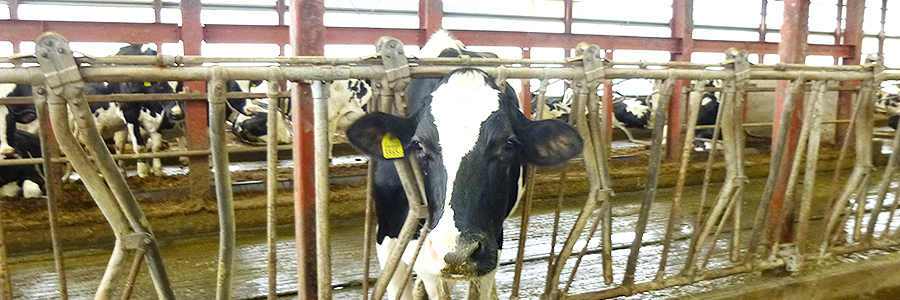
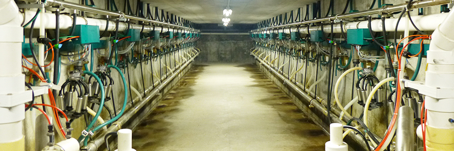
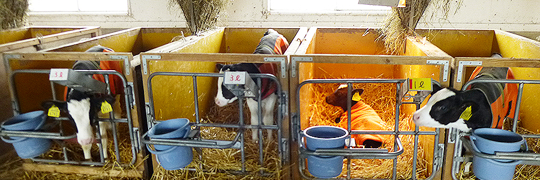

北海道江別市にある小林牧場さんにお邪魔しました！
新札幌乳業のある札幌市厚別区から車ですぐの場所にあります。
とっても近くなので、新鮮な小林牧場の生乳を新札幌乳業の工場へ運ぶことができるのですね。
小林牧場の特徴といえば、まずは「フリーストール牛舎」です。
放し飼い牛舎となり、牛たちが自由に動き回れるようになっています。朝のうちによくご飯を食べてくれる牛や午後になると食欲がわく牛など、牛にも好みがいろいろあるとか。牛たちは、この自由に過ごせる牛舎の中でストレスなく気ままに食事や休息をとっています。
※フリーストール牛舎※
※奥ではのんびり休息中※
こだわりの場所は牛舎だけではありません。
毎日絞られる搾乳舎にもこだわりがあります。
実際に搾乳される場所はいたってシンプルに。大きな音をだす機械などは地下に配置されています。こうすることで、搾乳中もストレスを減らして牛が過ごすことができるようにしています。
牛にやさしい牧場なので、おいしい生乳ができるのですね。
※搾乳舎1階部分※
※搾乳舎地下部分※
もちろん、牛の飼料にもこだわります。
牛たちの主食となる基礎飼料は、牧草とデントコーンを発酵させたサイレージと乾草で、そのすべてを小林牧場さんで生産しています。
良質な牧草を育てるためには、良質な土が必要。
という訳で、肥料まで小林牧場さんで作っています。
長い時間をかけて作られた良質な肥料を得た良質な土から、牛たちのためのおいしい牧草が育つのですね。
※じっくり時間をかけて肥料をができます※
牛たちの暮らしている環境から、食べるもの、その食べ物のための土づくりまで、すみずみまでこだわっている小林牧場さんの生乳だからこそ、おいしい牛乳やチーズができるのだと感じました。
※※生まれたばかりの子牛たち※
そんな小林牧場の生乳だけを使って作ったのが「新札幌乳業 北海道小林牧場物語」です。
牛乳はもちろんのこと、小林牧場の生乳だけを使ったチーズやヨーグルトなどを取り揃えています。
ぜひ一度、お試しくださいませ。
商品を購入する